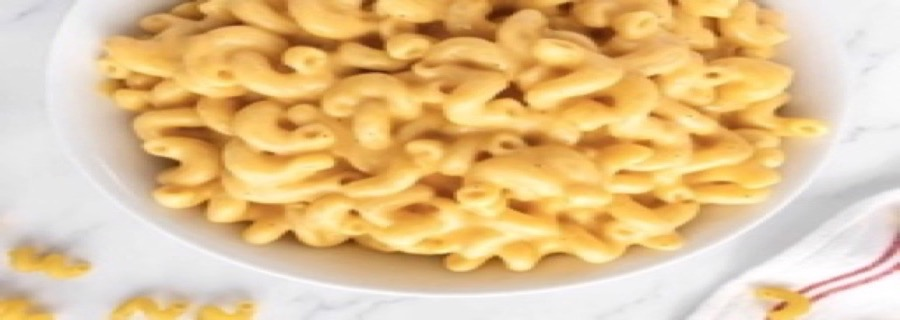

back to homepage
1. 8 oz macaroni (Rao's is my favorite)
2. Coarse kosher salt
3. 20 oz ml milk
4. 8 oz melting cheese (4 oz gruyere, 4 oz mild cheddar)
2. Turn the heat to low, add in your selection of melting cheeses and stir until the cheese melts and the sauce has formed about 1-2 minutes. Taste it. Season with salt if needed and serve.
3. To reheat leftover mac and cheese. Add to a bowl and add 1 TBSP of milk per cup of mac & cheese. Heat in the microwave for 45-60 seconds and stir until the creamy again.